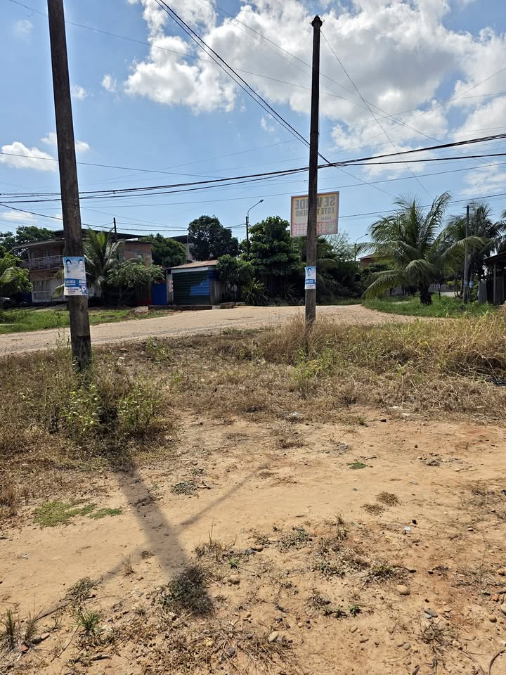

PEN145,000 3.824 ha

🏡 TERRENO EN VENTA – MANANTAY | PUCALLPA🔥✨ Excelente oportunidad para adquirir un terreno amplio y con documentación registral, ubicado en el Asentamiento Humano Tahuantinsuyo, distrito de Manantay. 📍 UBICACIÓN : A.H. Tahuantinsuyo – Manantay, Pucallpa, Ucayali. 📐 CARACTERÍSTICAS DEL TERRENO ✅ Área total: 382.40 m² ✅ Frente: 13.50 m – Calle al Parque ✅ Lado derecho: 30.00 m ✅ Lado izquierdo: 30.00 m – Jr. Las Mercedes ✅ Fondo: 12.00 m – Jr. Tahuantinsuyo ✅ Uso registrado: Vivienda ✅ Partida registral activa ✅ Inscrito en SUNARP Por sus dimensiones y ubicación, representa una excelent